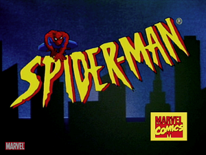

Spider-Man:The animated series (Aired 1994-1998)
Rating: 8.5/10
Age Restriction: TV-Y
A young man with spider like abilities fights crime as a superhero in New York City while trying to maintain a personal life.
Creators: Steve Ditko, Stan Lee
Cast
Christopher Daniel Barnes as .... Peter Parker
Sara Ballantine as .... Mary Jane Watson
Roscoe Lee Browne as .... Kingpin
Edward Asner as .... J. Jonah Jameson
Rodney Saulsberry as .... Robbie Robertson
Jennifer Hale as .... Felicia Hardy
Linda Gary as .... Aunt May Parker